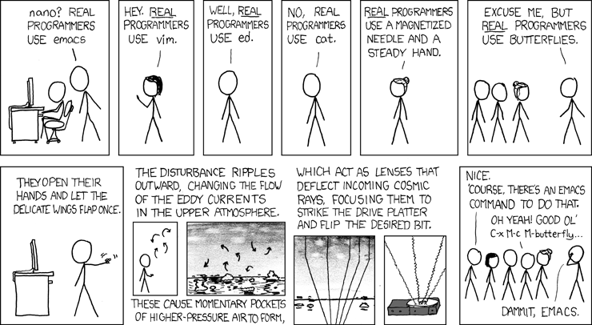

Emacs

THE EDITOR WARS
Note: By combining Emacs with Vim you can do Evil things
Below are few commands to get familiarize with Emacs Editor
Table of Contents
- Extended commands
- Dealing with files
- Extending above with with Helm mode
- Navigation
- Undo
- Search
- Replace
- Cut, Copy & Paste
- Buffers
- Capitalize
- Windows
- Modes
- In Cygwin After starting X server
- Column Editing
- Indenting XML
- Macros
- Plugin Manager
- Interesting Plugins
Extended commands
M-x followed by long command
C-x followed by letter or Ctrl & letter
C-c followed by letter or Ctrl & letter
Dealing with files
C-x C-f to find the file to load into buffer
C-x C-s to save buffer to file
C-x s to save some buffers
C-c C-x to exit emacs
C-x r m to bookmark the current file
C-x r b to find the bookmark
C-x r l to list all bookmarks
Extending above with with Helm mode
(require 'helm-fuzzy-find)
(require 'helm-config)
(require 'helm-ls-git)
;; setting helm M-x
(global-set-key (kbd "M-x") 'helm-M-x)
(global-set-key (kbd "C-x r b") 'helm-filtered-bookmarks)
(global-set-key (kbd "C-x C-f") 'helm-find-files)
(global-set-key (kbd "C-x C-d") 'helm-browse-project)
(global-set-key (kbd "C-x f") 'helm-multi-files)
(global-set-key (kbd "C-x C-r") 'helm-recentf)
(global-set-key (kbd "M-y") 'helm-show-kill-ring)
(global-set-key (kbd "C-c h") 'helm-command-prefix)
(global-set-key (kbd "C-c h o") 'helm-occur)
(global-set-key (kbd "C-c h g") 'helm-google-suggest)
(helm-mode 1)
Navigation
C-a Start of the line
C-e end of the line
C-f forward one cursor
C-b backward one cursor
C-p previous line
C-n next line
M-f forward one word
M-b backward one word
C-v forward one page
M-v backward one page
M-a forward one sentence
M-b backward one sentence
C-g kill current command
C-u n <cmd> to repeat command n times
M-n <cmd> to repeat command n times
C-l move current line to top-middle-bottom of the buffer.
C-u 0 C-l to move the current line to the top of the buffer
Undo
C-_ to undo
C-x u to undo
C-z to undo
Search
C-s Increment search forward
C-r Increment search backward
C-M-s regex increment search forward
C-M-r regex increment search backward
Replace
M-x replace-string RET xyz RET abc RET to replace xyz with abc
M-x query-replace RET xyz RET abc RET to replace xyz with abc
by asking user
<SPACE> to replace
<DEL> to skip
! to replace others
M-% to replace same as M-x query-replace
Cut, Copy & Paste
C-k cut from current cursor to end of the line (no newline)
M-k cut from current cursor to end of sentence
C-d to delete next character
<Delete> to delete previous character
M-d to delete next word
M-<Delete> to delete previous words
C-y paste
C-@ or C-Space mark set
C-w cut from mark set to cursor
M-w Copy from mark set to cursor
C-a C-Space C-n M-w to copy whole line (including new line)
C-k C-k to cut the whole line (including new line)
Buffers
C-x k to kill current buffer
C-x <Right> go to next buffer
C-x <Left> go to previous buffer
M-< move to beginning of the buffer
M-> move to end of the buffer
C-< select from current cursor to beginning of the buffer
C-> select from current cursor to end of the buffer
C-x b <buffer name> to switch to that buffer
C-x C-b to list all buffers
C-x h select everything in buffer
Capitalize
M-u to make upper case
M-l to make lower case
C-x C-u to make region to upper case
C-x C-l to make region to lower case
Windows
C-x 1 kill all other windows
C-x 2 to split horizontally
C-x 3 to split vertically
C-x 4 C-f to find file and open in another window
C-x 5 C-f to open file in separate window
M-x make-frame same as above
C-x o to switch between windows
C-M-v to scroll the other window
Modes
M-x <mode-name> to change mode
Ex: M-x auto-fill-mode to change to auto fill mode
C-u 40 C-x f to change the line width to 40
In Cygwin After starting X server
emacs - to start GNU emacs - Best use GNU Emacs
Display= xemacs - to start xemacs - May have older versions
Column Editing
M-x cua-mode to enable column editing (toggles)
C-RET to start the selection (toggles)
once mark is set traverse using C-n/p/f/b/a/e to select region
After selection
C-x to cut the selected region
C-c or M-w to copy the region
C-y or C-v to paste the region
Start typing having mouse at the start of the region to insert at the start of region
Same goes to end of the region
Ret to move around the corners of the region.
Using custom keys using .emacs
(global-set-key "\Key-Command" 'command)
Ex:
(global-set-key "\C-xc" 'compile)
(global-set-key "\C-xt" 'text-mode);
(global-set-key "\C-xr" 'replace-string);
(global-set-key "\C-xa" 'repeat-complex-command);
(global-set-key "\C-xw" 'what-line);
(global-set-key "\C-x\C-u" 'shell);
(global-set-key "\C-t" 'kill-word);
(global-set-key "\C-u" 'backward-word);
(global-set-key "\C-h" 'backward-delete-char-untabify);
(global-set-key "\C-x\C-m" 'not-modified);
(setq default-major-mode 'text-mode)
(setq text-mode-hook 'turn-on-auto-fill)
Indenting XML
M-x nxml-mode
M-x replace-regexp RET > *< RET >C-q C-j< RET
C-M-\ to indent
Macros
C-x ( to start recording macro
C-x ) to end recording macro
C-x e to execute last macro
M-x name-last-kbd-macro a
M-x a to execute macro "a"
open .emacs and type
M-x insert-kbd-macro "a"
Which will paste the macro a to file, so that you can save
and use that macro for future
Plugin Manager
You can use Cask to manage your emacs plugins
Interesting Plugins
Below are few interesting plugins
For git
(depends-on "eshell-git-prompt")
(depends-on "git-commit")
(depends-on "git-gutter")
(depends-on "git-timemachine")
(depends-on "github-browse-file")
(depends-on "magit")
(depends-on "magit-popup")
(depends-on "helm-ls-git")
For Evil (Emacs+Vim) things
(depends-on "colemak-evil")
(depends-on "evil")
(depends-on "evil-magit")
(depends-on "evil-surround")
(depends-on "evil-visual-mark-mode")
For themes
(depends-on "dakrone-theme")
(depends-on "gruvbox-theme")
(depends-on "atom-dark-theme")
(depends-on "airline-themes")
For helm
(depends-on "swiper-helm")
(depends-on "helm")
(depends-on "helm-ag")
(depends-on "helm-core")
(depends-on "helm-fuzzy-find")
(depends-on "helm-projectile")
Comments
Comments powered by Disqus